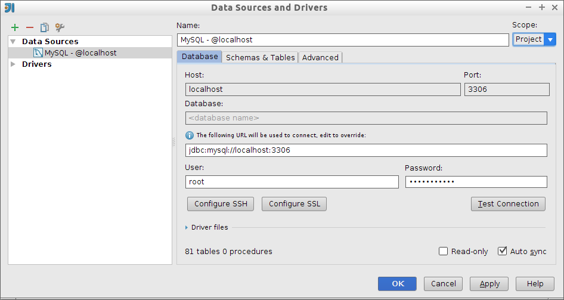

3. (2,5 puntos) Capa de persistencia y capa de negocio
En esta segunda sesión del proyecto web, una vez definidas las clases de modelo de la biblioteca, vamos a desarrollar la capa de persistencia de la aplicación usando JPA y clases DAO y la capa de métodos de negocio utilizando beans gestionados CDIs.
Recordemos que el objetivo de la aplicación es gestionar una biblioteca de un centro educativo y proporcionar distintas funcionalidades a los usuarios de la biblioteca y a sus bibliotecarios.
Una modificación que hay realizar en el proyecto resultante de la fase anterior: hay que eliminar los atributos nEjemplares y nEjemplaresDisponibles las clases Libro. Así se independiza totalmente el agregado Libro y Recomendacion del agregado Usuario, Multa, Prestamo y Ejemplar. También eran campos redundantes: el número de ejemplares totales y disponibles los podemos obtener mediante una consulta a la entidad Ejemplar. El diagrama de clases resultante se muestra en la siguiente figura.
|
3.1. API del servicio
Es conveniente remarcar que el objetivo final del desarrollo de la parte del servidor es proporcionar todas las funcionalidades de la aplicación en forma de API RESTful, que implementaremos en la sesión 3.
En concreto, las funcionalidades que vamos a proporcionar son las siguientes, agrupadas por la restricción de acceso. La autentificación y la restricción de acceso la implementaremos también en la sesión 3.
Operaciones restringidas a usuarios:
-
Obtener información actual de un usuario: se pasa el login del usuario y se obtienen sus datos.
-
Obener lista de préstamos de un usuario: se pasa el identificador del usuario y se devuelve la colección de préstamos que tiene prestados.
-
Obtener lista de libros de un usuario: se pasa el identificador del usuario y se devuelve la colección de libros que tiene prestados.
-
Solicitar un préstamo de un libro: se pasa el identificador del usuario y el identificador del libro y se realiza el préstamo de un ejemplar si el ejemplar está disponible. Se lanza un error si no hay ejemplares disponibles, si el usuario está multado o si supera el número de préstamos permitidos. Si se ha realizado el préstamo con éxito se devuelve el nuevo préstamo.
-
Realizar la devolución de un ejemplar: se pasa el identificador de usuario y el identificador de ejemplar, se crea un préstamo histórico con sus datos (y se elimina el préstamo activo). Por último, se crea una multa si la devolución está fuera de plazo. Se devuelve un enumerado con el resultado de la devolución:
DEVOLUCIÓN_CORRECTAoDEVOLUCIÓN_FUERA_DE_PLAZO. entidades asociado, si lo hubiera)
Operaciones no restringidas:
-
Listado de libros: se devuelve la lista de todos los libros
-
Búsqueda de libros por autor: se pasa una cadena de texto y se devuelve la lista de libros que tienen un autor cuyo nombre contiene esa cadena de texto
-
Búsqueda de libros por título: se pasa una cadena de texto y se devuelve la lista de libros cuyo título contiene esa cadena de texto
-
Búsqueda de libro por identificador: se pasa el identificador del libro y se devuelven los detalles del libro
-
Búsqueda de libro por ISBN: se pasa el ISBN del libro y se devuelven los detalles del libro con ese ISBN
-
Libros recomendados: se pasa el identificador del libro y un número n de recomendaciones deseadas. Se devuelve la lista de, como máximo, n recomendaciones asociadas al libro inicial.
-
Número ejemplares de un libro: se pasa el identificador del libro y se devuelve el número de ejemplares totales de ese libro.
-
Número ejemplares disponibles: se pasa el identificador del libro y se devuelve el número de ejemplares disponibles de ese libro.
Vamos a centrar el desarrollo de la capa de servicios y de persistencia en estas funcionalidades utilizando:
-
Entidades JPA con anotaciones y Bean Validation
-
Capa de DAOs sobre las entidades con el CRUD y las búsquedas de la entidad
-
Capa de servicios con beans gestionados y CDIs
Realizaremos también un número considerable de pruebas:
-
Pruebas con DbUnit de las entidades
-
Pruebas con Arquillian de los DAO y la capa de servicio
Vamos a realizar una primera iteración guiada en la que implementaremos algunas de las funcionalidades relacionadas con libros. Después deberás implementar el resto de funcionalidades.
3.2. Iteración 1
En esta primera iteración vamos a implementar las dos funcionalidades:
-
Listado de libros: se devuelve la lista de todos los libros
-
Libros recomendados: se pasa el identificador del libro y un número n de recomendaciones deseadas. Se devuelve la lista de esos n libros que más se han prestado junto con el libro inicial.
3.2.1. Capa de persistencia
En la capa de persistencia tenemos que convertir las clases de modelo en entidades, utilizando las anotaciones JPA y bean validation necesarias. Crearemos también las clases DAO que encapsulan las operaciones sobre estas entidades.
Creación de la base de datos
Antes de empezar a trabajar con el código debemos crear la base de datos biblioteca en nuestro ordenador y la fuente de datos BibliotecaDS en nuestro servidor WildFly en donde vamos a hacer las pruebas.
Para crear la base de datos desde IntelliJ utiliza el panel Database situado en el lateral derecho:
-
Abre el panel Database en la parte derecha.
-
Crea una nueva conexión con la base de datos MySQL con la opción + > Data Source > MySQL
-
Inicializa los parámetros de la conexión, sólo tienes que indicar el usuario
rooty la contraseñaexpertojava. Aparecerá también un aviso indicando que no está descargado el driver de acceso a MySQL, pincha el enlace y lo descargará e instalará.
Una vez configurada la conexión, vamos a utilizarla para crear la base de datos biblioteca. En el panel de base de datos podremos ver un desplegable con las bases de datos existentes. Para crear la nueva base de datos abre la consola SQL pulsando el icono correspondiente del panel de base de datos:

Y ejecuta el comando:
CREATE DATABASE biblioteca;Verás que se ha creado una base de datos con ese nombre bajo las ya existentes por defecto en MySQL.
Otra forma de crear la base de datos es hacerlo desde línea de comando:
$ echo "CREATE DATABASE biblioteca" > create.sql
$ mysql -u root -p"expertojava" < create.sqlConfiguración de la fuente de datos MySQL en WildFly
Recuerda que para trabajar con JPA en una aplicación web el acceso a la base de datos hay que hacerlo a través de una fuente de datos creada y gestionada por el servidor de aplicaciones.
Vamos a ver cómo configurar una fuente de datos MySQL en WildFly. Algunos de los pasos siguientes no serán necesarios si estás trabajando con el mismo servidor de aplicaciones con el que has hecho los módulos de JPA o de Componentes EJB. Los incluimos por completitud, por si estás trabajando con un servidor recién instalado.
-
En primer lugar localiza el driver MySQL
mysql-connector-java-5.1.33.jar(lo puedes encontrar en el repositorio local de Maven.m2/repository/mysql/mysql-connector-java/5.1.33/ -
Conéctate a la consola de administración de WildFly y selecciona la opción Runtime > Manage Deployments > Add y añade el JAR. Ponle como nombre mysql_connector (no es importante)

-
Pulsa en el botón En/Disable para activar el driver
-
En Configuration > Connector > Datasources > XA DATASOURCES tenemos que crear una nueva fuente de datos. Pulsa el botón Add e introduce los siguientes nombres:
-
Name:
BibliotecaDS -
JNDI Name:
java:/datasources/BibliotecaDS
-
-
Selecciona el driver que acabamos de añadir y escribe como nombre de clase XA DataSource:
com.mysql.jdbc.jdbc2.optional.MysqlXADataSource:

-
Añade la propiedad
URLy el valorjdbc:mysql://localhost:3306/biblioteca -
Y en la última pantalla define el usuario y la contraseña de la conexión
-
Username:
root -
Password:
expertojava
-
Y prueba la conexión pulsando el botón.
-
Por último activamos la fuente de datos:
Configuración de JPA
Vamos a añadir al proyecto la configuración JPA:
-
Dependencias en el POM
-
Fichero
persistence.xmlen la configuración de ejecución -
Fichero
persistence.xmlen la configuración de test
Empezamos con el POM de Maven. Hay que añadir al fichero pom.xml las dependencias relacionadas con Hibernate y DbUnit, para poder ejecutar los tests. El fichero completo es el siguiente:
<?xml version="1.0" encoding="UTF-8"?>
<project xmlns="http://maven.apache.org/POM/4.0.0" xmlns:xsi="http://www.w3.org/2001/XMLSchema-instance" xsi:schemaLocation="http://maven.apache.org/POM/4.0.0 http://maven.apache.org/xsd/maven-4.0.0.xsd">
<modelVersion>4.0.0</modelVersion>
<groupId>org.expertojava</groupId>
<artifactId>jbib-rest</artifactId>
<version>1.0-SNAPSHOT</version>
<packaging>war</packaging>
<name>jbib-rest</name>
<properties>
<project.build.sourceEncoding>UTF-8</project.build.sourceEncoding>
</properties>
<dependencies>
<dependency>
<groupId>javax</groupId>
<artifactId>javaee-web-api</artifactId>
<version>7.0</version>
<scope>provided</scope>
</dependency>
<!-- Añadimos el scope provided para que no de error el
elemento provider del persistence.xml de runtime -->
<dependency>
<groupId>org.hibernate</groupId>
<artifactId>hibernate-entitymanager</artifactId>
<version>4.3.7.Final</version>
<scope>test,provided</scope>
</dependency>
<!-- Tests -->
<dependency>
<groupId>junit</groupId>
<artifactId>junit</artifactId>
<version>4.11</version>
<scope>test</scope>
</dependency>
<!-- Logging -->
<dependency>
<groupId>commons-logging</groupId>
<artifactId>commons-logging</artifactId>
<version>1.2</version>
</dependency>
<dependency>
<groupId>log4j</groupId>
<artifactId>log4j</artifactId>
<version>1.2.17</version>
<scope>test</scope>
</dependency>
<dependency>
<groupId>org.slf4j</groupId>
<artifactId>slf4j-simple</artifactId>
<version>1.7.12</version>
</dependency>
<!-- JPA -->
<dependency>
<groupId>org.dbunit</groupId>
<artifactId>dbunit</artifactId>
<version>2.5.0</version>
<scope>test</scope>
</dependency>
<dependency>
<groupId>mysql</groupId>
<artifactId>mysql-connector-java</artifactId>
<version>5.1.33</version>
<scope>test</scope>
</dependency>
<dependency>
<groupId>org.hibernate.javax.persistence</groupId>
<artifactId>hibernate-jpa-2.1-api</artifactId>
<version>1.0.0.Final</version>
<scope>test</scope>
</dependency>
<dependency>
<groupId>org.slf4j</groupId>
<artifactId>slf4j-api</artifactId>
<version>1.7.7</version>
<scope>test</scope>
</dependency>
<!-- Hibernate validator -->
<dependency>
<groupId>org.hibernate</groupId>
<artifactId>hibernate-validator</artifactId>
<version>5.1.3.Final</version>
<scope>test</scope>
</dependency>
<dependency>
<groupId>javax.el</groupId>
<artifactId>javax.el-api</artifactId>
<version>2.2.4</version>
<scope>test</scope>
</dependency>
<dependency>
<groupId>org.glassfish.web</groupId>
<artifactId>el-impl</artifactId>
<version>2.2</version>
<scope>test</scope>
</dependency>
</dependencies>
<build>
<finalName>${project.name}</finalName>
<plugins>
<plugin>
<groupId>org.apache.maven.plugins</groupId>
<artifactId>maven-compiler-plugin</artifactId>
<version>3.1</version>
<configuration>
<source>1.7</source>
<target>1.7</target>
</configuration>
</plugin>
<plugin>
<groupId>org.apache.maven.plugins</groupId>
<artifactId>maven-war-plugin</artifactId>
<version>2.3</version>
<configuration>
<failOnMissingWebXml>false</failOnMissingWebXml>
</configuration>
</plugin>
<plugin>
<groupId>org.wildfly.plugins</groupId>
<artifactId>wildfly-maven-plugin</artifactId>
<version>1.0.2.Final</version>
<configuration>
<hostname>localhost</hostname>
<port>9990</port>
</configuration>
</plugin>
</plugins>
</build>
</project>En el fichero src/main/resources/META-INF/persistence.xml definimos la configuración de JPA y definimos la unidad de persistencia biblioteca.
Incluimos la declaración de las clases de entidad que vamos a implementar en esta primera iteración.
<?xml version="1.0" encoding="UTF-8"?>
<persistence version="2.0"
xmlns="http://java.sun.com/xml/ns/persistence" xmlns:xsi="http://www.w3.org/2001/XMLSchema-instance"
xsi:schemaLocation="
http://java.sun.com/xml/ns/persistence
http://java.sun.com/xml/ns/persistence/persistence_2_0.xsd">
<persistence-unit name="biblioteca-datasource">
<provider>org.hibernate.jpa.HibernatePersistenceProvider</provider>
<jta-data-source>java:/datasources/BibliotecaDS</jta-data-source>
<class>org.expertojava.jbibrest.modelo.Libro</class>
<class>org.expertojava.jbibrest.modelo.Recomendacion</class>
<properties>
<property name="hibernate.id.new_generator_mappings" value="false"/>
<property name="hibernate.dialect"
value="org.hibernate.dialect.MySQLDialect"/>
<property name="hibernate.hbm2ddl.auto" value="update" />
<property name="hibernate.show_sql" value="true" />
</properties>
</persistence-unit>
</persistence>Y en la configuración de test añadimos la configuración de JPA que se va a utilizar para lanzar las pruebas. El fichero es src/test/resources/META-INF/persistence.xml
<persistence version="2.1"
xmlns="http://xmlns.jcp.org/xml/ns/persistence"
xmlns:xsi="http://www.w3.org/2001/XMLSchema-instance"
xsi:schemaLocation="http://xmlns.jcp.org/xml/ns/persistence">
<persistence-unit name="biblioteca-local"
transaction-type="RESOURCE_LOCAL">
<provider>org.hibernate.jpa.HibernatePersistenceProvider</provider>
<class>org.expertojava.jbibrest.modelo.Libro</class>
<class>org.expertojava.jbibrest.modelo.Recomendacion</class>
<properties>
<!-- JPA properties -->
<property name="javax.persistence.jdbc.driver"
value="com.mysql.jdbc.Driver"/>
<property name="javax.persistence.jdbc.url"
value="jdbc:mysql://localhost:3306/biblioteca"/>
<property name="javax.persistence.jdbc.user" value="root"/>
<property name="javax.persistence.jdbc.password"
value="expertojava"/>
<!-- Hibernate properties -->
<property name="hibernate.dialect"
value="org.hibernate.dialect.MySQLDialect"/>
<property name="hibernate.show_sql" value="true"/>
<property name="hibernate.format_sql" value="false"/>
<property name="hibernate.hbm2ddl.auto" value="create"/>
</properties>
</persistence-unit>
</persistence>Clases de entidades
Vamos ahora a modificar un pequeño conjunto de clases del modelo, añadiendo las anotaciones necesarias para convertirlas en clases de entidad JPA. En concreto, las clases son:
-
Libro -
Recomendacion -
ClaseDominio
Añadiremos anotaciones JPA y anotaciones Bean Validation.
La clase ClaseDominio es la superclase de todas las entidades, en donde se define la clave primaria y los métodos equals y hashCode basados en esa clave primaria. Debemos añadir la anotación @MappedSuperclass para indicar a JPA que incluya sus atributos en todas las clases hijas. Además, añadimos las anotaciones relacionadas con la clave primaria.
package org.expertojava.jbibrest.modelo;
import javax.persistence.GeneratedValue;
import javax.persistence.Id;
import javax.persistence.MappedSuperclass;
@MappedSuperclass
public abstract class ClaseDominio {
@Id
@GeneratedValue
private Long id;
protected void setId(Long id) { this.id = id; }
public Long getId() { return id;}
@Override
public boolean equals(Object o) {
if (this == o) return true;
if (o == null || getClass() != o.getClass()) return false;
ClaseDominio that = (ClaseDominio) o;
return !(id != null ? !id.equals(that.id) : that.id != null);
}
@Override
public int hashCode() {
return id != null ? id.hashCode() : 0;
}
}Listamos a continuación las otras clases.
package org.expertojava.jbibrest.modelo;
import org.apache.commons.logging.Log;
import org.apache.commons.logging.LogFactory;
import javax.persistence.Column;
import javax.persistence.Entity;
import javax.persistence.FetchType;
import javax.persistence.OneToMany;
import javax.validation.constraints.Min;
import javax.validation.constraints.NotNull;
import java.util.HashSet;
import java.util.Set;
@Entity
public class Libro extends ClaseDominio {
@NotNull
@Column(unique=true, nullable = false)
private String isbn;
private String autor;
private String titulo;
@Min(0)
private Integer numPaginas;
private String portadaURI;
@OneToMany(mappedBy = "libro", fetch = FetchType.EAGER)
private Set<Recomendacion> recomendaciones = new HashSet<Recomendacion>();
private static Log logger = LogFactory.getLog(Libro.class);
public Libro() {}
public Libro(String isbn) {
this.isbn = isbn;
}
public String getIsbn() {
return isbn;
}
public void setIsbn(String isbn) {
this.isbn = isbn;
}
public String getAutor() {
return autor;
}
public void setAutor(String autor) {
this.autor = autor;
}
public String getTitulo() {
return titulo;
}
public void setTitulo(String titulo) {
this.titulo = titulo;
}
public Integer getNumPaginas() {
return numPaginas;
}
public void setNumPaginas(Integer numPaginas) {
this.numPaginas = numPaginas;
}
public String getPortadaURI() {
return portadaURI;
}
public void setPortadaURI(String portadaURI) {
this.portadaURI = portadaURI;
}
public Set<Recomendacion> getRecomendaciones() {
return recomendaciones;
}
// Actualización de la relación a-muchos recomendaciones
// No hay que actualizar la relación inversa, porque
// estamos haciendo una inicialización, no un cambio, y la
// recomendación ya está creada con el libro
public void añadeRecomendacion(Recomendacion recomendacion) {
this.getRecomendaciones().add(recomendacion);
}
@Override
public String toString() {
return "Libro{" +
"id=" + this.getId() +
", isbn='" + this.getIsbn() + '\'' +
", autor='" + this.getAutor() + '\'' +
", titulo='" + this.getTitulo() + '\'' +
", numPaginas=" + this.getNumPaginas() +
", portadaURI='" + this.getPortadaURI() + '\'' +
'}';
}
}package org.expertojava.jbibrest.modelo;
import org.apache.commons.logging.Log;
import org.apache.commons.logging.LogFactory;
import javax.persistence.*;
import javax.validation.constraints.NotNull;
@Entity
public class Recomendacion extends ClaseDominio {
@NotNull
@ManyToOne
@JoinColumn(nullable = false)
private Libro libro;
@NotNull
@OneToOne
@JoinColumn(nullable = false)
private Libro libroRelacionado;
private String comentario;
private static Log logger = LogFactory.getLog(Recomendacion.class);
public Recomendacion() {}
public Recomendacion(Libro libro, Libro libroRelacionado) {
String msg;
if (libro == null) {
msg = "Error al crear recomendación: libro null";
logger.error(msg);
throw new IllegalArgumentException(msg);
}
if (libroRelacionado == null) {
msg = "Error al crear recomendación: libroRelacionado null";
logger.error(msg);
throw new IllegalArgumentException(msg);
}
this.libro = libro;
this.libroRelacionado = libroRelacionado;
}
public Libro getLibro() {
return libro;
}
public Libro getLibroRelacionado() {
return libroRelacionado;
}
public void setLibroRelacionado(Libro libroRelacionado) {
this.libroRelacionado = libroRelacionado;
}
public String getComentario() {
return comentario;
}
public void setComentario(String comentario) {
this.comentario = comentario;
}
}Pruebas con DbUnit
Vamos a probar estas dos primeras entidades utilizando DbUnit. Empezamos por crear el fichero src/test/resources/dbunit/dataset1.xml con un conjunto de datos de prueba.
<?xml version='1.0' encoding='UTF-8'?>
<dataset>
<Libro id="1" titulo="Patterns Of Enterprise Application Architecture"
autor="Martin Fowler" isbn="0321127420" numPaginas="533" portadaURI="0321127420.jpg"/>
<Libro id="2" titulo="Clean Code" autor="Robert C. Martin"
isbn="0132350882" numPaginas="288" portadaURI="0132350882.jpg"/>
<Libro id="3" titulo="Test Driven Development" autor="Kent Beck"
isbn="0321146530" numPaginas="192" portadaURI="0321146530.jpg"/>
<Libro id="4" titulo="Extreme Programming Explained" autor="Kent Beck"
isbn="0321278658" numPaginas="224" portadaURI="0321278658.jpg"/>
<Libro id="5" titulo="The Art of Computer Programming" autor="Donald E. Knuth"
isbn="0201896834" numPaginas="144" portadaURI="0321278658.jpg"/>
<Recomendacion id="1" libro_id="2" libroRelacionado_id = "3"/>
<Recomendacion id="2" libro_id="2" libroRelacionado_id = "1"/>
<Recomendacion id="3" libro_id="3" libroRelacionado_id = "2"/>
</dataset>Para empezar definimos un test sencillo que carga el dataset y comprueba el método find de la entidad. Los creamos en el fichero src/test/java/org.expertojava.jbibrest.persistencia.TestsLibroAggregate.java.
package org.expertojava.jbibrest.persistencia;
import org.dbunit.database.DatabaseConfig;
import org.dbunit.database.DatabaseConnection;
import org.dbunit.database.IDatabaseConnection;
import org.dbunit.dataset.IDataSet;
import org.dbunit.dataset.xml.FlatXmlDataSetBuilder;
import org.dbunit.ext.mysql.MySqlDataTypeFactory;
import org.dbunit.operation.DatabaseOperation;
import org.expertojava.jbibrest.modelo.Libro;
import org.junit.AfterClass;
import org.junit.Before;
import org.junit.BeforeClass;
import org.junit.Test;
import javax.persistence.EntityManager;
import javax.persistence.EntityManagerFactory;
import javax.persistence.Persistence;
import javax.validation.ConstraintViolationException;
import java.sql.Connection;
import java.sql.DriverManager;
import static org.junit.Assert.assertTrue;
import static org.junit.Assert.fail;
//
// Tests del aggregate formado por las entidades Libro y Recomendacion
//
public class TestsLibroAggregate {
private static EntityManagerFactory emf;
private static IDatabaseConnection connection;
private static IDataSet dataset;
@BeforeClass
public static void initAllTests() {
try {
// Inicializamos sólo una vez el emf antes de todos los tests
emf = Persistence.createEntityManagerFactory("biblioteca-local");
// Inicializamos la conexión a la BD necesaria para
// que DBUnit cargue los datos de los tests
Class.forName("com.mysql.jdbc.Driver");
Connection jdbcConnection = (Connection) DriverManager
.getConnection(
"jdbc:mysql://localhost:3306/biblioteca",
"root", "expertojava");
connection = new DatabaseConnection(jdbcConnection);
// 2 líneas para eliminar el warning
DatabaseConfig dbConfig = connection.getConfig();
dbConfig.setProperty(DatabaseConfig.PROPERTY_DATATYPE_FACTORY, new MySqlDataTypeFactory());
// Inicializamos el dataset
FlatXmlDataSetBuilder flatXmlDataSetBuilder =
new FlatXmlDataSetBuilder();
flatXmlDataSetBuilder.setColumnSensing(true);
dataset = flatXmlDataSetBuilder.build(Thread.currentThread()
.getContextClassLoader()
.getResourceAsStream("dbunit/dataset1.xml"));
} catch (Exception ex) {
ex.printStackTrace();
fail("Excepción al inicializar el emf y DbUnit");
}
}
// Se ejecuta antes de cada test
@Before
public void cleanDB() throws Exception {
// Se hace un "clean insert" de los datos de prueba
// definidos en el fichero XML. El "clean insert" vacía las
// tablas de los datos de prueba y después inserta los datos
DatabaseOperation.CLEAN_INSERT.execute(connection, dataset);
}
/*
* Tests de entidades Libro y Recomendacion
*/
@Test
public void findLibroIdTest() {
EntityManager em = emf.createEntityManager();
Libro libro = em.find(Libro.class, 2L);
em.close();
assertTrue(libro.getIsbn().equals("0132350882"));
assertTrue(libro.getTitulo().equals("Clean Code"));
assertTrue(libro.getAutor().equals("Robert C. Martin"));
assertTrue(libro.getNumPaginas().equals(288));
assertTrue(libro.getPortadaURI().equals("0132350882.jpg"));
}
// Se ejecuta una vez después de todos los tests
@AfterClass
public static void closeEntityManagerFactory() throws Exception {
// Borramos todos los datos y cerramos la conexión
//DatabaseOperation.DELETE_ALL.execute(connection, dataset);
if (emf != null)
emf.close();
}
}Nos aseguramos de que el test funciona y añadimos algunos más, que comprueben la creación de entidades, las relaciones y el Bean Validation:
@Test
public void createLibroTest() {
String isbn = "123456789";
EntityManager em = emf.createEntityManager();
em.getTransaction().begin();
Libro libro = new Libro(isbn);
em.persist(libro);
em.getTransaction().commit();
Long libroId = libro.getId();
em = emf.createEntityManager();
Libro libroRecuperado = em.find(Libro.class, libroId);
assertTrue(libroRecuperado.getIsbn().equals(isbn));
em.close();
}
@Test
public void numRecomendacionesTest() {
EntityManager em = emf.createEntityManager();
Libro libro = em.find(Libro.class, 2L);
em.close();
assertTrue(libro.getRecomendaciones().size() == 2);
}
@Test(expected = ConstraintViolationException.class)
public void errorValidacionNumPaginasNegativasTest() {
Long id = 2L;
EntityManager em = emf.createEntityManager();
try {
em.getTransaction().begin();
Libro libro = em.find(Libro.class, id);
libro.setNumPaginas(-1);
em.flush();
em.getTransaction().commit();
} catch (ConstraintViolationException ex){
em.getTransaction().rollback();
throw ex;
}
em.close();
}Clases DAO
Añadimos ahora las clases DAO correspondientes a las entidades anteriores. Lo hacemos en el paquete org.expertojava.jbibrest.persistencia:
-
org.expertojava.jbibrest.persistencia.Dao -
org.expertojava.jbibrest.persistencia.LibroDAO -
org.expertojava.jbibrest.persistencia.Recomendacion
La clase abstracta Dao:
package org.expertojava.jbibrest.persistencia;
import javax.persistence.EntityManager;
import javax.persistence.PersistenceContext;
abstract class Dao<T, K> {
@PersistenceContext
EntityManager em;
public T create(T t) {
em.persist(t);
em.flush();
em.refresh(t);
return t;
}
public T update(T t) {
return (T) em.merge(t);
}
public void delete(T t) {
t = em.merge(t);
em.remove(t);
}
public abstract T find(K id);
}La clase LibroDao:
package org.expertojava.jbibrest.persistencia;
import org.expertojava.jbibrest.modelo.Libro;
import javax.persistence.Query;
import javax.persistence.TypedQuery;
import java.util.ArrayList;
import java.util.List;
public class LibroDao extends Dao<Libro, Long> {
String FIND_ALL_LIBROS = "SELECT l FROM Libro l ";
@Override
public Libro find(Long id) {
return em.find(Libro.class, id);
}
public List<Libro> listAllLibros() {
TypedQuery<Libro> query = em.createQuery(FIND_ALL_LIBROS, Libro.class);
return query.getResultList();
}
}Y la clase RecomendacionDao en donde se guardan recomendaciones que relacionan un libro con otro
package org.expertojava.jbibrest.persistencia;
import org.expertojava.jbibrest.modelo.Recomendacion;
import javax.persistence.Query;
import java.util.List;
public class RecomendacionDao extends Dao<Recomendacion, Long> {
String FIND_ALL_RECOMENDACIONES = "SELECT r FROM Recomendacion r ";
@Override
public Recomendacion find(Long id) {
return em.find(Recomendacion.class, id);
}
public List<Recomendacion> listAllRecomendaciones() {
Query query = em.createQuery(FIND_ALL_RECOMENDACIONES);
return (List<Recomendacion>) query.getResultList();
}
}Estos DAO los vamos a inyectar usando CDIs. Para que CDI funcione correctamente debes crear el fichero beans.xml vacío en el directorio main/webapp/WEB-INF:
<?xml version="1.0" encoding="UTF-8"?>
<beans
xmlns="http://xmlns.jcp.org/xml/ns/javaee"
xmlns:xsi="http://www.w3.org/2001/XMLSchema-instance"
xsi:schemaLocation="http://xmlns.jcp.org/xml/ns/javaee
http://xmlns.jcp.org/xml/ns/javaee/beans_1_1.xsd"
bean-discovery-mode="all">
</beans>Pruebas con Arquillian
Habrás visto que en la clase Dao se inyecta la unidad de persistencia. Por ello necesitamos probar las clases Dao dentro del servidor de aplicaciones, para lo que utilizaremos Arquilian. También lo utilizaremos para probar los métodos de servicio.
Para incluir Arquilian debemos seguir los siguientes pasos:
En primer lugar, añadimos las dependencias necesarias en el fichero POM del proyecto Maven:
...
<properties>
<project.build.sourceEncoding>UTF-8</project.build.sourceEncoding>
<version.arquillian-persistence>1.0.0.Alpha7</version.arquillian-persistence>
</properties>
<dependencyManagement>
<dependencies>
<dependency>
<groupId>org.jboss.arquillian</groupId>
<artifactId>arquillian-bom</artifactId>
<version>1.1.10.Final</version>
<scope>import</scope>
<type>pom</type>
</dependency>
</dependencies>
</dependencyManagement>
...
<!-- Arquillian -->
<dependency>
<groupId>org.jboss.arquillian.junit</groupId>
<artifactId>arquillian-junit-container</artifactId>
<scope>test</scope>
</dependency>
<dependency>
<groupId>org.wildfly</groupId>
<artifactId>wildfly-arquillian-container-remote</artifactId>
<version>8.1.0.Final</version>
<scope>test</scope>
</dependency>
<!-- Arquillian persistence -->
(1)
<dependency>
<groupId>org.jboss.arquillian.extension</groupId>
<artifactId>arquillian-persistence-api</artifactId>
<version>${version.arquillian-persistence}</version>
<scope>test</scope>
</dependency>
<dependency>
<groupId>org.jboss.arquillian.extension</groupId>
<artifactId>arquillian-persistence-core</artifactId>
<version>${version.arquillian-persistence}</version>
<scope>test</scope>
</dependency>
<dependency>
<groupId>org.jboss.arquillian.extension</groupId>
<artifactId>arquillian-persistence-dbunit</artifactId>
<version>${version.arquillian-persistence}</version>
<scope>test</scope>
</dependency>
<dependency>
<groupId>org.jboss.arquillian.extension</groupId>
<artifactId>arquillian-persistence-spi</artifactId>
<version>${version.arquillian-persistence}</version>
<scope>test</scope>
</dependency>
...| 1 | Las librerías de Arquillian Persistence van a hacer posible utilizar DbUnit para cargar el dataset en la realización de los tests dentro del servidor WildFly. |
Después añadimos en el directorio test/resources el fichero persistence-datasource.xml que es una copia del persistence.xml usado en tiempo de ejecución. Lo usaremos para que Arquillian lo copie en el war que despliega en el servidor de aplicaciones.
Configuramos el modo de cargar la base de datos con update para mantener los datos que introduce DbUnit en la ejecución de los tests de persistencia.
<?xml version="1.0" encoding="UTF-8"?>
<persistence version="2.0"
xmlns="http://java.sun.com/xml/ns/persistence" xmlns:xsi="http://www.w3.org/2001/XMLSchema-instance"
xsi:schemaLocation="
http://java.sun.com/xml/ns/persistence
http://java.sun.com/xml/ns/persistence/persistence_2_0.xsd">
<persistence-unit name="biblioteca-datasource">
<provider>org.hibernate.jpa.HibernatePersistenceProvider</provider>
<jta-data-source>java:/datasources/BibliotecaDS</jta-data-source>
<class>org.expertojava.jbibrest.modelo.Libro</class>
<class>org.expertojava.jbibrest.modelo.Recomendacion</class>
<properties>
<property name="hibernate.id.new_generator_mappings" value="false"/>
<property name="hibernate.dialect"
value="org.hibernate.dialect.MySQLDialect"/>
<property name="hibernate.hbm2ddl.auto" value="create" /> (1)
<property name="hibernate.show_sql" value="true" />
</properties>
</persistence-unit>
</persistence>| 1 | Configuramos el modo de cargar la base de datos con create para limpiar la base de datos |
Por último, definimos dos tests iniciales con Arquillian. El primero para comprobar las clases Dao se inyectan correctamente y el segundo para comprobar un primer método sencillo del DAO.
package org.expertojava.jbibrest.persistencia;
import org.expertojava.jbibrest.modelo.Libro;
import org.expertojava.jbibrest.modelo.Recomendacion;
import org.expertojava.jbibrest.utils.BibliotecaException;
import org.jboss.arquillian.container.test.api.Deployment;
import org.jboss.arquillian.junit.Arquillian;
import org.jboss.arquillian.persistence.Cleanup;
import org.jboss.arquillian.persistence.CleanupStrategy;
import org.jboss.arquillian.persistence.TestExecutionPhase;
import org.jboss.arquillian.persistence.UsingDataSet;
import org.jboss.shrinkwrap.api.ShrinkWrap;
import org.jboss.shrinkwrap.api.asset.EmptyAsset;
import org.jboss.shrinkwrap.api.spec.JavaArchive;
import org.junit.Test;
import org.junit.runner.RunWith;
import javax.inject.Inject;
import static org.junit.Assert.assertNotNull;
import static org.junit.Assert.assertTrue;
@RunWith(Arquillian.class)
public class TestsLibroAggregateArquillian {
@Inject
LibroDao libroDao;
@Inject
RecomendacionDao recomendacionDao;
@Deployment
public static JavaArchive createDeployment() {
return ShrinkWrap.create(JavaArchive.class)
.addPackage(Libro.class.getPackage())
.addPackage(Recomendacion.class.getPackage())
.addPackage(LibroDao.class.getPackage())
.addPackage(RecomendacionDao.class.getPackage())
.addPackage(BibliotecaException.class.getPackage())
.addAsResource("persistence-datasource.xml",
"META-INF/persistence.xml")
.addAsManifestResource(EmptyAsset.INSTANCE, "beans.xml");
}
@Test
public void libroDaoNoEsNullTest() {
assertNotNull(libroDao);
}
@UsingDataSet("dbunit/dataset1.xml")
@Cleanup(phase = TestExecutionPhase.BEFORE, strategy = CleanupStrategy.USED_TABLES_ONLY)
@Test
public void findLibroIdTest() {
Libro libro = libroDao.find(2L);
assertTrue(libro.getIsbn().equals("0132350882"));
assertTrue(libro.getTitulo().equals("Clean Code"));
assertTrue(libro.getAutor().equals("Robert C. Martin"));
assertTrue(libro.getNumPaginas().equals(288));
assertTrue(libro.getPortadaURI().equals("0132350882.jpg"));
}
}Pruebas de las clases Dao
Una vez configurado correctamente Arquillian realizamos algunas pruebas adicionales en los DAO, sin ser demasiado exhaustivos. Por ejemplo, podemos probar:
-
Método
find -
Métodos de actualización de las relaciones y sus inversas
-
Consultas
-
Restricciones Bean Validation
@UsingDataSet("dbunit/dataset1.xml")
@Cleanup(phase = TestExecutionPhase.BEFORE, strategy = CleanupStrategy.USED_TABLES_ONLY)
@Test
public void numRecomendacionesTest() {
Libro libro = libroDao.find(2L);(1)
assertTrue(libro.getRecomendaciones().size() == 2);
}
@UsingDataSet("dbunit/dataset1.xml")
@Cleanup(phase = TestExecutionPhase.BEFORE, strategy = CleanupStrategy.USED_TABLES_ONLY)
@Test
public void createLibroTest() {
String isbn = "123456789";(2)
Libro libro = new Libro(isbn);
Libro libroCreado = libroDao.create(libro);
Long libroId = libroCreado.getId();
Libro libroRecuperado = libroDao.find(libroId);
assertTrue(libroRecuperado.getIsbn().equals(isbn));
}
@UsingDataSet("dbunit/dataset1.xml")
@Cleanup(phase = TestExecutionPhase.BEFORE, strategy = CleanupStrategy.USED_TABLES_ONLY)
@Test
public void findRecomendacionTest() {
Recomendacion recomendacion = recomendacionDao.find(1L);(3)
assertTrue(recomendacion.getLibro().getTitulo().equals("Clean Code"));
assertTrue(recomendacion.getLibroRelacionado().getTitulo().equals("Test Driven Development"));
}
@UsingDataSet("dbunit/dataset1.xml")
@Cleanup(phase = TestExecutionPhase.BEFORE, strategy = CleanupStrategy.USED_TABLES_ONLY)
@Test
public void añadeRecomendacionTest() {
Libro libro3 = libroDao.find(3L);(4)
Libro libro1 = libroDao.find(1L);
Recomendacion recomendacion = new Recomendacion(libro3, libro1);
recomendacion = recomendacionDao.create(recomendacion);
// actualizamos la relación en memoria
libro3.añadeRecomendacion(recomendacion);
assertTrue(libro3.getRecomendaciones().size() == 2);
assertTrue(libro3.getRecomendaciones().contains(recomendacion));
}
}Las anotaciones de Arquillian permiten usar DbUnit desde dentro del servidor:
-
@UsingDataSet: Inserta el conjunto de prueba indicado. También envuelve el test dentro de una transacción. -
@Cleanup: define el modo de limpieza de los datos de prueba. En nuestro caso, antes de cada ejecución de test se limpiarán las tablas definidas en el conjunto de prueba y se insertaran los datos datos de prueba (con el@UsingDataSet).
| ¡¡No te limites a copiar y pegar!! Es imprescindible que leas bien el código y entiendas qué se está probando en cada test. |
3.2.2. Capa de lógica de negocio
Una vez definida la capa de persistencia, vamos a implementar los siguientes métodos de negocio en esta primera iteración:
-
Listado de libros: se devuelve la lista de todos los libros
-
Libros recomendados: se pasa el identificador del libro y un número n de recomendaciones deseadas. Se devuelve la lista de esas n recomendaciones (o menos, si no hay suficientes recomendaciones)
Vamos a definir los métodos de negocio como método de un bean gestionado que anotaremos con @Transactional para proporcional transaccionalidad en las llamdas a las distintas clases DAO.
Vamos a probar la capa de negocio de dos formas. Primero lo haremos accediendo al método desde un servlet y mostrando los resultados en una página web. Y después usaremos usaremos Arquillian.
3.2.3. Clase de servicio
Creamos en el paquete org.expertojava.jbibrest.servicio la clase LibroServicio, con la anotación @Transactional contieniendo los métodos listaLibros() y listaRecomendaciones(). Obtenemos los DAO por CDI:
package org.expertojava.jbibrest.servicio;
import org.expertojava.jbibrest.modelo.Ejemplar;
import org.expertojava.jbibrest.modelo.Libro;
import org.expertojava.jbibrest.modelo.Recomendacion;
import org.expertojava.jbibrest.persistencia.LibroDao;
import org.expertojava.jbibrest.persistencia.RecomendacionDao;
import javax.inject.Inject;
import javax.transaction.Transactional;
import java.util.ArrayList;
import java.util.List;
@Transactional
public class LibroServicio {
@Inject
LibroDao libroDao; (1)
@Inject
RecomendacionDao recomendacionDao; (2)
public Libro buscaLibroPorId(Long id) {
if (id == null) {
throw new IllegalArgumentException("Id no puede ser null");
}
return libroDao.find(id);
}
public List<Recomendacion> listaRecomendaciones(Long libroId, int n) {
List<Recomendacion> listaDevuelta = new ArrayList<>();
Libro libro = libroDao.find(libroId);
int anyadidos = 0;
for (Recomendacion rec : libro.getRecomendaciones()) {
if (anyadidos == n) break;
listaDevuelta.add(rec);
anyadidos++;
}
return listaDevuelta;
}
public List<Libro> listaLibros() {
return libroDao.listAllLibros();
}
}<1><2> Obtenemos los DAO por inyección de dependencias
Tal y como hemos visto en el módulo de JPA, el bean gestionado obtiene los DAO por inyección de dependencias y los utiliza en los métodos de negocio. Cada método de negocio se ejecuta dentro de una transacción JTA que crea automáticamente el servidor de aplicaciones.
3.2.4. Prueba desde un servlet
Añadimos el fichero src/main/webapp/index.jsp desde donde lanzamos las peticiones a los servlets:
<!DOCTYPE HTML PUBLIC "-//W3C//DTD HTML 4.0 Transitional//EN">
<html>
<head>
<title>Start Page</title>
<meta http-equiv="Content-Type" content="text/html">
</head>
<body>
<h1>Pruebas métodos de negocio</h1>
<hr/>
<p><a href="<%=request.getContextPath()%>/listalibros">Listado de libros</a></p>
<hr/>
<form action="<%=request.getContextPath()%>/listarecomendaciones">
<p>Identificador del libro: <input type="text" name="libroId"></p>
<p>Número de recomendaciones: <input type="text" name="numRecomendaciones"></p>
<input type="submit" value="Enviar">
</form>
</form>
<hr/>
</body>
</html>Y añadimos los dos servlets que realizan la llamada a los métodos de negocio. En primer lugar src/main/java/org.expertojava.jbibrest.ListadoLibros:
package org.expertojava.jbibrest.servlets;
import org.expertojava.jbibrest.modelo.Libro;
import org.expertojava.jbibrest.servicio.LibroServicio;
import javax.inject.Inject;
import javax.servlet.ServletException;
import javax.servlet.annotation.WebServlet;
import javax.servlet.http.HttpServlet;
import javax.servlet.http.HttpServletRequest;
import javax.servlet.http.HttpServletResponse;
import java.io.IOException;
import java.io.PrintWriter;
import java.util.List;
@WebServlet(name="listaLibros", urlPatterns="/listaLibros")
public class ListadoLibros extends HttpServlet {
@Inject
LibroServicio libroServicio; (1)
protected void doPost(HttpServletRequest request,
HttpServletResponse response) throws
ServletException, IOException {
}
protected void doGet(HttpServletRequest request,
HttpServletResponse response) throws
ServletException, IOException {
List<Libro> listaLibros
= libroServicio.listaLibros(); (2)
response.setContentType("text/html");
PrintWriter out = response.getWriter();
out.println("<!DOCTYPE HTML PUBLIC \"" +
"-//W3C//DTD HTML 4.0 " +
"Transitional//EN\">");
out.println("<HTML>");
out.println("<BODY>");
out.println("<ul>");
for (Libro libro : listaLibros ) {
out.println("<li>");
out.println(libro.getId() + " - " + libro.getAutor() + " : " + libro.getTitulo());
out.println("</li>");
}
out.println("</ul>");
out.println("</BODY>");
out.println("</HTML");
}
}| 1 | Inyección del bean gestionado |
| 2 | Llamada al método de negocio del bean |
Y en segundo lugar src/main/java/org.expertojava.jbibrest.ListaRecomendaciones:
package org.expertojava.jbibrest.servlets;
import org.expertojava.jbibrest.modelo.Libro;
import org.expertojava.jbibrest.modelo.Recomendacion;
import org.expertojava.jbibrest.servicio.LibroServicio;
import javax.inject.Inject;
import javax.servlet.ServletException;
import javax.servlet.annotation.WebServlet;
import javax.servlet.http.HttpServlet;
import javax.servlet.http.HttpServletRequest;
import javax.servlet.http.HttpServletResponse;
import java.io.IOException;
import java.io.PrintWriter;
import java.util.List;
@WebServlet(name="listaRecomendaciones", urlPatterns="/listaRecomendaciones")
public class ListaRecomendaciones extends HttpServlet {
@Inject
LibroServicio libroServicio;
protected void doPost(HttpServletRequest request,
HttpServletResponse response) throws
ServletException, IOException {
}
protected void doGet(HttpServletRequest request,
HttpServletResponse response) throws
ServletException, IOException {
Long libroId = Long.valueOf(request.getParameter("libroId"));
int nRec = Integer.valueOf(request.getParameter("numRecomendaciones"));
List<Recomendacion> listaRecomendaciones
= libroServicio.listaRecomendaciones(libroId, nRec);
Libro libro = libroServicio.buscaLibroPorId(libroId);
response.setContentType("text/html");
PrintWriter out = response.getWriter();
out.println("<!DOCTYPE HTML PUBLIC \"" +
"-//W3C//DTD HTML 4.0 " +
"Transitional//EN\">");
out.println("<HTML>");
out.println("<BODY>");
out.println("<p> El libro " + libro.getTitulo() +
" se ha prestado junto con: </p>");
out.println("<ul>");
for (Recomendacion recomendacion : listaRecomendaciones ) {
out.println("<li>");
out.println(recomendacion.getLibroRelacionado().getTitulo());
out.println("</li>");
}
out.println("</ul>");
out.println("</BODY>");
out.println("</HTML");
}
}3.2.5. Prueba desde Arquillian
También probamos los métodos de negocio desde Arquillian.
Creamos la clase TestsLibroServicio.java en el paquete org.expertojava.jbibrest.servicio:
package org.expertojava.jbibrest.servicio;
import org.expertojava.jbibrest.modelo.Libro;
import org.expertojava.jbibrest.modelo.Recomendacion;
import org.expertojava.jbibrest.persistencia.LibroDao;
import org.expertojava.jbibrest.persistencia.RecomendacionDao;
import org.expertojava.jbibrest.utils.BibliotecaException;
import org.jboss.arquillian.container.test.api.Deployment;
import org.jboss.arquillian.junit.Arquillian;
import org.jboss.arquillian.persistence.UsingDataSet;
import org.jboss.shrinkwrap.api.ShrinkWrap;
import org.jboss.shrinkwrap.api.asset.EmptyAsset;
import org.jboss.shrinkwrap.api.spec.JavaArchive;
import org.junit.Test;
import org.junit.runner.RunWith;
import javax.inject.Inject;
import java.util.List;
import static junit.framework.Assert.assertTrue;
import static junit.framework.TestCase.assertNotNull;
@RunWith(Arquillian.class)
public class TestsLibroServicio {
@Inject
LibroServicio libroServicio;
@Deployment
public static JavaArchive createDeployment() {
return ShrinkWrap.create(JavaArchive.class)
.addPackage(Libro.class.getPackage())
.addPackage(LibroDao.class.getPackage())
.addPackage(Recomendacion.class.getPackage())
.addPackage(RecomendacionDao.class.getPackage())
.addPackage(LibroServicio.class.getPackage())
.addPackage(BibliotecaException.class.getPackage())
.addAsResource("persistence-datasource.xml",
"META-INF/persistence.xml")
.addAsManifestResource(EmptyAsset.INSTANCE, "beans.xml");
}
@Test
public void libroServicioNoEsNullTest() {
assertNotNull(libroServicio);
}
@UsingDataSet("dbunit/dataset1.xml")
@Test
public void buscaLibroPorIdTest() {
Libro libro = libroServicio.buscaLibroPorId(4L);
assertTrue(libro.getTitulo().equals("Extreme Programming Explained"));
}
@UsingDataSet("dbunit/dataset1.xml")
@Test
public void listaRecomendacionesTest() {
List<Recomendacion> recomendaciones = libroServicio.listaRecomendaciones(2L, 3);
assertTrue(recomendaciones.size() == 2);
}
}3.3. Resto de la sesión
Una vez que hemos realizado de forma guiada la primera iteración, debes completar el resto del proyecto siguiendo las pautas anteriores. Dejamos en el tintero algunas funcionalidades, para no hacer demasiado extensa la aplicación.
3.3.1. Funcionalidades
Operaciones en la clase LibroServicio:
-
Creación de libro: se pasan cadenas con isbn, autor y título y se crea una nueva entidad, que se devuelve.
-
Búsqueda de libros por autor: se pasa una cadena de texto y se devuelve la lista de libros que tienen un autor cuyo nombre contiene esa cadena de texto.
-
Búsqueda de libros por título: se pasa una cadena de texto y se devuelve la lista de libros cuyo título contiene esa cadena de texto.
-
Búsqueda de libro por ISBN: se pasa el ISBN del libro y se devuelve el libro con ese ISBN o
nullsi no existe.
Operaciones en la clase EjemplarServicio:
-
Número ejemplares de un libro: se pasa el identificador del libro y se devuelve el número de ejemplares totales de ese libro.
-
Número ejemplares disponibles: se pasa el identificador del libro y se devuelve el número de ejemplares disponibles de ese libro.
Operaciones en la clase UsuarioServicio:
-
Obtener información actual de un usuario: se pasa el login del usuario y se obtienen sus datos (un objeto de tipo
Usuario): su identificador, sus préstamos activos, su multa, etc. -
Obener lista de préstamos de un un usuario: se pasa el identificador del usuario y devuelve la colección de préstamos del usuario.
-
Solicitar un préstamo de un libro: se pasa el identificador del usuario y el identificador del libro y se realiza el préstamo de un ejemplar disponible si existe alguno. Se lanza un error si no hay ejemplares disponibles, si el usuario está multado o si supera el número de préstamos permitidos. Si se ha realizado el préstamo con éxito se devuelven los datos del nuevo préstamo.
-
Realizar la devolución de un ejemplar: se pasa el identificador de ejemplar, se cierra el préstamo (se elimina de la lista de préstamos activos y se crea un préstamo histórico) y se crea una multa si la devolución está fuera de plazo. Se devuelve un enumerado con el resultado de la devolución:
DEVOLUCIÓN_CORRECTAoDEVOLUCIÓN_FUERA_DE_PLAZO.
3.3.2. Ejemplos de pruebas
Listamos a continuación algunos ejemplos parciales de las clases de tests.
Los datos completos de prueba:
<?xml version='1.0' encoding='UTF-8'?>
<dataset>
<!-- Libros -->
<Libro id="1" titulo="Patterns Of Enterprise Application Architecture"
autor="Martin Fowler" isbn="0321127420" numPaginas="533" portadaURI="0321127420.jpg"/>
<Libro id="2" titulo="Clean Code" autor="Robert C. Martin"
isbn="0132350882" numPaginas="288" portadaURI="0132350882.jpg"/>
<Libro id="3" titulo="Test Driven Development" autor="Kent Beck"
isbn="0321146530" numPaginas="192" portadaURI="0321146530.jpg"/>
<Libro id="4" titulo="Extreme Programming Explained" autor="Kent Beck"
isbn="0321278658" numPaginas="224" portadaURI="0321278658.jpg"/>
<Libro id="5" titulo="The Art of Computer Programming" autor="Donald E. Knuth"
isbn="0201896834" numPaginas="144" portadaURI="0321278658.jpg"/>
<!-- Recomendaciones -->
<Recomendacion id="1" libro_id="2" libroRelacionado_id = "3"/>
<Recomendacion id="2" libro_id="2" libroRelacionado_id = "1"/>
<Recomendacion id="3" libro_id="3" libroRelacionado_id = "2"/>
<!-- Usuarios -->
<Usuario id="1" tipo="PROFESOR" login="vicente.casamayor"/>
<Usuario id="2" tipo="ALUMNO" login="antonio.perez" nombre="Antonio"
apellido1="Pérez" apellido2="Martínez"/>
<Usuario id="3" tipo="ALUMNO" login="anabel.garcia" nombre="Anabel"
apellido1="Garcia" apellido2="Sierra"/>
<!-- Ejemplares -->
<Ejemplar id="1" codigoEjemplar="001" fechaAdquisicion="2014-10-01"
libroId="1"/>
<Ejemplar id="2" codigoEjemplar="002" fechaAdquisicion="2014-10-01"
libroId="1"/>
<Ejemplar id="3" codigoEjemplar="001" fechaAdquisicion="2014-11-01"
libroId="2"/>
<Ejemplar id="4" codigoEjemplar="001" fechaAdquisicion="2014-11-21"
libroId="3"/>
<Ejemplar id="5" codigoEjemplar="003" fechaAdquisicion="2014-10-01"
libroId="1"/>
<!-- Prestamos activos -->
<Prestamo id="2" ejemplar_id="4" usuario_id="2" fecha="2014-12-01"
deberiaDevolverseEl="2014-12-05"/>
<Prestamo id="3" ejemplar_id="2" usuario_id="1" fecha="2014-11-01"
deberiaDevolverseEl="2014-11-30"/>
<Prestamo id="4" ejemplar_id="3" usuario_id="1" fecha="2014-11-01"
deberiaDevolverseEl="2014-11-30"/>
<!-- Multas -->
<Multa id="1" desde="2014-12-02" hasta="2015-12-12" usuario_id="3"/>
</dataset>Algunos tests de la clase TestsUsuarioAggregate que prueba las entidades del agregado Usuario:
package org.expertojava.jbibrest.persistencia;
// Imports
//
// Tests del aggregate formado por las entidades Usuario, Prestamo
// Ejemplar y Multa
//
public class TestUsuarioAggregate {
private static EntityManagerFactory emf;
private static IDatabaseConnection connection;
private static IDataSet dataset;
@BeforeClass
public static void initAllTests() {
try {
// Inicializamos sólo una vez el emf antes de todos los tests
emf = Persistence.createEntityManagerFactory("biblioteca-local");
// Inicializamos la conexión a la BD necesaria para
// que DBUnit cargue los datos de los tests
Class.forName("com.mysql.jdbc.Driver");
Connection jdbcConnection = DriverManager
.getConnection(
"jdbc:mysql://localhost:3306/biblioteca",
"root", "expertojava");
connection = new DatabaseConnection(jdbcConnection);
// 2 líneas para eliminar el warning
DatabaseConfig dbConfig = connection.getConfig();
dbConfig.setProperty(DatabaseConfig.PROPERTY_DATATYPE_FACTORY, new MySqlDataTypeFactory());
// Inicializamos el dataset
FlatXmlDataSetBuilder flatXmlDataSetBuilder =
new FlatXmlDataSetBuilder();
flatXmlDataSetBuilder.setColumnSensing(true);
dataset = flatXmlDataSetBuilder.build(Thread.currentThread()
.getContextClassLoader()
.getResourceAsStream("dbunit/dataset2.xml"));
} catch (Exception ex) {
ex.printStackTrace();
fail("Excepción al inicializar el emf y DbUnit");
}
}
// Se ejecuta antes de cada test
@Before
public void cleanDB() throws Exception {
// Se hace un "clean insert" de los datos de prueba
// definidos en el fichero XML. El "clean insert" vacía las
// tablas de los datos de prueba y después inserta los datos
DatabaseOperation.CLEAN_INSERT.execute(connection, dataset);
}
@Test
public void cargaDataSetTest() {
assertTrue(true);
}
@Test
public void usuarioRecuperadoContienePrestamos() {
EntityManager em = emf.createEntityManager();
Usuario usuario = em.find(Usuario.class, 1L);
em.close();
assertTrue(usuario.getPrestamos().size() == 2);
}
@Test
public void usuarioRecuperadoContieneMulta() {
EntityManager em = emf.createEntityManager();
Usuario usuario = em.find(Usuario.class, 3L);
em.close();
assertTrue(usuario.getMulta().getId() == 1L);
}
@Test
public void eliminaPrestamoDeUsuarioyEjemplar() {
EntityManager em = emf.createEntityManager();
em.getTransaction().begin();
Usuario usuario = em.find(Usuario.class, 1L);
Ejemplar ejemplar = em.find(Ejemplar.class, 2L);
Prestamo prestamo = em.find(Prestamo.class, 3L);
usuario.quitaPrestamo(prestamo);
ejemplar.quitaPrestamo();
em.remove(prestamo);
em.getTransaction().commit();
em.close();
// Comprobamos que la relación se ha actualizado en memoria
assertFalse(usuario.getPrestamos().contains(prestamo));
assertNull(ejemplar.getPrestamo());
// Comprobamos que la relación se ha actualizado en BD
em = emf.createEntityManager();
prestamo = em.find(Prestamo.class, 3L);
usuario = em.find(Usuario.class, 1L);
ejemplar = em.find(Ejemplar.class, 2L);
em.close();
assertFalse(usuario.getPrestamos().contains(prestamo));
assertNull(ejemplar.getPrestamo());
assertNull(prestamo);
}
@Test(expected = BibliotecaException.class)
public void eliminaPrestamoDeUsuarioLanzaExcepcionCuandoPrestamoNoEsDeUsuario() {
EntityManager em = emf.createEntityManager();
try {
em.getTransaction().begin();
Usuario usuario = em.find(Usuario.class, 1L);
Prestamo prestamo = em.find(Prestamo.class, 2L);
usuario.quitaPrestamo(prestamo);
em.getTransaction().commit();
} catch (Exception ex) {
em.getTransaction().rollback();
throw ex;
}
}
@Test
public void prestamoCreadoConUsuarioyEjemplarActualizaCorrectamenteEntidades() {
EntityManager em = emf.createEntityManager();
em.getTransaction().begin();
Ejemplar ejemplar = em.find(Ejemplar.class, 1L);
Usuario usuario = em.find(Usuario.class, 2L);
Date fechaInicio = Utils.stringToDate("08-11-2015");
Date fechaDevolucion = BibliotecaBR.getInstance().fechaDevolucionPrestamo(usuario, fechaInicio);
Prestamo prestamo = new Prestamo(usuario, ejemplar, fechaInicio, fechaDevolucion);
em.persist(prestamo);
em.flush();
Long prestamoId = prestamo.getId();
usuario.añadePrestamo(prestamo);
ejemplar.setPrestamo(prestamo);
em.getTransaction().commit();
em.close();
// Comprobamos que la relación se ha actualizado en memoria
assertTrue(ejemplar.getPrestamo().equals(prestamo));
assertTrue(usuario.getPrestamos().contains(prestamo));
// Comprobamos que la relación se ha actualizado en BD
em = emf.createEntityManager();
prestamo = em.find(Prestamo.class, prestamoId);
ejemplar = em.find(Ejemplar.class, 1L);
usuario = em.find(Usuario.class, 2L);
em.close();
assertTrue(ejemplar.getPrestamo().equals(prestamo));
assertTrue(usuario.getPrestamos().contains(prestamo));
}
// Se ejecuta una vez después de todos los tests
@AfterClass
public static void closeEntityManagerFactory() throws Exception {
// Borramos todos los datos y cerramos la conexión
//DatabaseOperation.DELETE_ALL.execute(connection, dataset);
if (emf != null)
emf.close();
}
}La clase TestsUsuarioAggregateArquillian.java contiene las pruebas de los DAOs del agregado Usuario:
package org.expertojava.jbibrest.persistencia;
import org.expertojava.jbibrest.modelo.*;
import org.expertojava.jbibrest.utils.BibliotecaException;
import org.jboss.arquillian.container.test.api.Deployment;
import org.jboss.arquillian.junit.Arquillian;
import org.jboss.arquillian.junit.InSequence;
import org.jboss.arquillian.persistence.Cleanup;
import org.jboss.arquillian.persistence.CleanupStrategy;
import org.jboss.arquillian.persistence.TestExecutionPhase;
import org.jboss.arquillian.persistence.UsingDataSet;
import org.jboss.shrinkwrap.api.ShrinkWrap;
import org.jboss.shrinkwrap.api.asset.EmptyAsset;
import org.jboss.shrinkwrap.api.spec.JavaArchive;
import org.junit.Test;
import org.junit.runner.RunWith;
import javax.inject.Inject;
import javax.persistence.EntityManager;
import java.util.List;
import static org.junit.Assert.*;
import static org.junit.Assert.assertFalse;
import static org.junit.Assert.assertNull;
@RunWith(Arquillian.class)
public class TestUsuarioAggregateArquillian {
@Inject
UsuarioDao usuarioDao;
@Inject
PrestamoDao prestamoDao;
@Inject
EjemplarDao ejemplarDao;
@Inject
MultaDao multaDao;
@Deployment
public static JavaArchive createDeployment() {
return ShrinkWrap.create(JavaArchive.class)
.addPackage(Alumno.class.getPackage())
.addPackage(Profesor.class.getPackage())
.addPackage(Direccion.class.getPackage())
.addPackage(Multa.class.getPackage())
.addPackage(Prestamo.class.getPackage())
.addPackage(Usuario.class.getPackage())
.addPackage(Dao.class.getPackage())
.addPackage(EjemplarDao.class.getPackage())
.addPackage(MultaDao.class.getPackage())
.addPackage(PrestamoDao.class.getPackage())
.addPackage(UsuarioDao.class.getPackage())
.addPackage(BibliotecaException.class.getPackage())
.addAsResource("persistence-datasource.xml",
"META-INF/persistence.xml")
.addAsManifestResource(EmptyAsset.INSTANCE, "beans.xml");
}
@UsingDataSet("dbunit/dataset2.xml")
@Cleanup(phase = TestExecutionPhase.BEFORE, strategy = CleanupStrategy.USED_TABLES_ONLY)
@Test
public void daosNoSonNullTest() {
assertNotNull(usuarioDao);
assertNotNull(prestamoDao);
assertNotNull(ejemplarDao);
assertNotNull(multaDao);
}
@UsingDataSet("dbunit/dataset2.xml")
@Cleanup(phase = TestExecutionPhase.BEFORE, strategy = CleanupStrategy.USED_TABLES_ONLY)
@Test
public void usuarioRecuperadoContienePrestamos() {
Usuario usuario = usuarioDao.find(1L);
assertTrue(usuario.getPrestamos().size() == 2);
}
@Cleanup(phase = TestExecutionPhase.BEFORE, strategy = CleanupStrategy.USED_TABLES_ONLY)
@UsingDataSet("dbunit/dataset2.xml")
@Test
@InSequence(1)
public void eliminaPrestamoDeUsuarioyEjemplar() {
Usuario usuario = usuarioDao.find(1L);
Ejemplar ejemplar = ejemplarDao.find(2L);
Prestamo prestamo = prestamoDao.find(3L);
usuario.quitaPrestamo(prestamo);
usuarioDao.update(usuario);
ejemplar.quitaPrestamo();
ejemplarDao.update(ejemplar);
prestamoDao.delete(prestamo);
// Comprobamos que la relación se ha actualizado en memoria
assertFalse(usuario.getPrestamos().contains(prestamo));
assertNull(ejemplar.getPrestamo());
}
// Ponemos la anotación NONE para que no se borren los datos de las tablas
// y podamos comprobar el resultado de la acción anterior en la que se ha
// eliminado un préstamo. Utilizamos también InSequence para asegurar que
// los tests se ejecutan en el orden correcto.
@Cleanup(phase = TestExecutionPhase.NONE)
@Test
@InSequence(2)
public void compruebaPrestamoEliminado() {
Prestamo prestamo = prestamoDao.find(3L);
Usuario usuario = usuarioDao.find(1L);
Ejemplar ejemplar = ejemplarDao.find(2L);
assertFalse(usuario.getPrestamos().contains(prestamo));
assertNull(ejemplar.getPrestamo());
assertNull(prestamo);
}
@Cleanup(phase = TestExecutionPhase.BEFORE, strategy = CleanupStrategy.USED_TABLES_ONLY)
@UsingDataSet("dbunit/dataset2.xml")
@Test
@InSequence(3)
public void eliminaMultaDeUsuario() {
Usuario usuario = usuarioDao.find(3L);
Multa multa = usuario.getMulta();
assertTrue(multa.getId() == 1L);
usuario.quitaMulta();
usuarioDao.update(usuario);
multaDao.delete(multa);
assertNull(usuario.getMulta());
}
// Igual que antes, en el test compruebaPrestamoEliminado
@Cleanup(phase = TestExecutionPhase.NONE)
@Test
@InSequence(4)
public void compuebaMultaEliminada() {
Multa multa = multaDao.find(1L);
Usuario usuario = usuarioDao.find(3L);
assertNull(usuario.getMulta());
assertNull(multa);
}
// Pruebas EjemplarDao
...
}La clase TestsUsuarioServicio contiene las pruebas de los métodos de negocio de UsuarioServicio:
package org.expertojava.jbibrest.servicio;
import org.expertojava.jbibrest.modelo.*;
import org.expertojava.jbibrest.persistencia.*;
import org.expertojava.jbibrest.utils.BibliotecaBR;
import org.expertojava.jbibrest.utils.BibliotecaException;
import org.expertojava.jbibrest.utils.FechaActualStub;
import org.jboss.arquillian.container.test.api.Deployment;
import org.jboss.arquillian.junit.Arquillian;
import org.jboss.arquillian.persistence.Cleanup;
import org.jboss.arquillian.persistence.CleanupStrategy;
import org.jboss.arquillian.persistence.TestExecutionPhase;
import org.jboss.arquillian.persistence.UsingDataSet;
import org.jboss.shrinkwrap.api.ShrinkWrap;
import org.jboss.shrinkwrap.api.asset.EmptyAsset;
import org.jboss.shrinkwrap.api.spec.JavaArchive;
import org.junit.Assert;
import org.junit.Test;
import org.junit.runner.RunWith;
import javax.inject.Inject;
import java.util.List;
import static junit.framework.Assert.assertTrue;
import static junit.framework.TestCase.assertNotNull;
@RunWith(Arquillian.class)
public class TestsUsuarioServicio {
@Inject
UsuarioServicio usuarioServicio;
@Deployment
public static JavaArchive createDeployment() {
return ShrinkWrap.create(JavaArchive.class)
.addPackage(Alumno.class.getPackage())
.addPackage(Profesor.class.getPackage())
.addPackage(Direccion.class.getPackage())
.addPackage(Multa.class.getPackage())
.addPackage(Prestamo.class.getPackage())
.addPackage(Usuario.class.getPackage())
.addPackage(EjemplarDao.class.getPackage())
.addPackage(MultaDao.class.getPackage())
.addPackage(PrestamoDao.class.getPackage())
.addPackage(UsuarioDao.class.getPackage())
.addPackage(BibliotecaException.class.getPackage())
.addPackage(UsuarioServicio.class.getPackage())
.addAsResource("persistence-datasource.xml",
"META-INF/persistence.xml")
.addAsManifestResource(EmptyAsset.INSTANCE, "beans.xml");
}
@UsingDataSet("dbunit/dataset2.xml")
@Cleanup(phase = TestExecutionPhase.BEFORE, strategy = CleanupStrategy.USED_TABLES_ONLY)
@Test
public void usuarioServicioNoEsNullTest() {
assertNotNull(usuarioServicio);
}
@UsingDataSet("dbunit/dataset2.xml")
@Cleanup(phase = TestExecutionPhase.BEFORE, strategy = CleanupStrategy.USED_TABLES_ONLY)
@Test
public void buscaUsuarioPorIdTest() {
Usuario usuario = usuarioServicio.buscaUsuarioPorId(1L);
Assert.assertTrue(usuario.getPrestamos().size() == 2);
assertNotNull(usuarioServicio);
}
@UsingDataSet("dbunit/dataset2.xml")
@Cleanup(phase = TestExecutionPhase.BEFORE, strategy = CleanupStrategy.USED_TABLES_ONLY)
@Test
public void recuperaUsuarioTest() {
Usuario usuario = usuarioServicio.recuperarUsuario("vicente.casamayor");
Assert.assertTrue(usuario.getPrestamos().size() == 2);
assertNotNull(usuarioServicio);
}
@UsingDataSet("dbunit/dataset2.xml")
@Cleanup(phase = TestExecutionPhase.BEFORE, strategy = CleanupStrategy.USED_TABLES_ONLY)
@Test
public void realizarPrestamoTest() {
GeneradorFechaActualStub generadorFechaActual = new GeneradorFechaActualStub(); (1)
generadorFechaActual.setFechaActual(Utils.stringToDate("2014-11-02"));
// Actualizamos el generador de fecha actual en BibliotecaBR para que el
// método de negocio obtenga esa fecha
BibliotecaBR.getInstance().setFechaActualGenerator(generadorFechaActual);
Prestamo prestamo = usuarioServicio.solicitaPrestamo(1L, 1L);
Usuario usuario = usuarioServicio.buscaUsuarioPorId(1L);
assertTrue(prestamo.getEjemplar().getLibroId() == 1);
assertTrue(usuario.getPrestamos().contains(prestamo));
}
}| 1 | Gestión de la fecha actual para poder fijarla en los tests (ver el apartado siguiente) |
Gestión de la fecha actual en los tests
La fecha actual es un elemento cambiante de cualquier aplicación. Es importante poder fijarla en los tests para que la ejecución de éstos no sea dependiente de la fecha del sistema. Existen varias formas de solucionar este problema. Una de ellas es definir una función auxiliar en la aplicación que devuelva la fecha del sistema por defecto y modificar esta función en los tests.
Listamos a continuación las clases que usamos.
Interfaz GeneradorFechaActual.java
package org.expertojava.jbibrest.utils;
import java.util.Date;
public interface GeneradorFechaActual {
public Date getFechaActual();
}Implementación GeneradorFechaActualReal.java:
En el código principal de la aplicación definimos la implementación que devuelve la fecha real:
package org.expertojava.jbibrest.utils;
import java.util.Date;
public class GeneradorFechaActualReal implements GeneradorFechaActual {
public Date getFechaActual() {
return new Date();
}
}Implementación GeneradorFechaActualStub.java
En el código de tests definimos la implementación mockup que permite fijar la fecha a la que nos interesa:
package org.expertojava.jbibrest.utils;
import java.util.Date;
public class GeneradorFechaActualStub implements GeneradorFechaActual {
Date fecha = null;
public void setFechaActual(Date fecha) {
this.fecha = fecha;
}
public Date getFechaActual() {
return fecha;
}
}Singleton BibliotecaBR
El generador de fechas lo guardamos en el singleton BibliotecaBR, y lo inicializamos por defecto al generador de la fecha real:
public class BibliotecaBR {
...
// Generador de fecha actual
GeneradorFechaActual generadorFechaActual = new GeneradorFechaActualReal();
...
public void setGeneradorFechaActual(GeneradorFechaActual generadorFechaActual) {
this.generadorFechaActual = generadorFechaActual;
}
public GeneradorFechaActual getGeneradorFechaActual() {
return this.generadorFechaActual;
}
...
}Uso en la aplicación
En la aplicación debemos obtener la fecha actual consultando el objeto guardado en BibliotecaBR. De esta forma, obtendremos la fecha real o la fecha fijada por el test, según en qué contexto se esté ejecutando el código:
GeneradorFechaActual generadorFechaActual = BibliotecaBR.getInstance().getGeneradorFechaActual();
Date fechaActual = generadorFechaActual.getFechaActual();Actualización de la fecha en el test
En el test definimos una implementación del generador que nos permite fijar la fecha, definimos la fecha actual y lo inyectamos en BibliotecaBR antes de llamar al método de servicio:
GeneradorFechaActualStub generadorFechaActual = new GeneradorFechaActualStub();
generadorFechaActual.setFechaActual(Utils.stringToDate("2014-11-02"));
// Actualizamos el generador de fecha actual en BibliotecaBR para que el
// método de negocio obtenga esa fecha
BibliotecaBR.getInstance().setFechaActualGenerator(generadorFechaActual);
Prestamo prestamo = usuarioServicio.solicitaPrestamo(1L, 1L); (1)
Usuario usuario = usuarioServicio.buscaUsuarioPorId(1L);
assertTrue(prestamo.getEjemplar().getLibroId() == 1);
assertTrue(usuario.getPrestamos().contains(prestamo));| 1 | Llamamos al método de servicio habiendo inyectado la fecha 2014-11-02 como fecha actual. Si no lo hiciéramos así, se produciría un error al intentar el usuario tomar un libro prestado, porque tiene préstamos que vencen en 2014 y si se obtuviera la fecha actual real su estado sería moroso. |
3.4. Entrega
Debes completar las funcionalidades y las pruebas del proyecto. Repasamos la lista de cosas por hacer:
-
Añadir las anotaciones JPA a las clases restantes
-
Usuario(abstracta) y su relación de herencia conAlumnoyProfesor -
Ejemplar -
Prestamo -
Multa -
PrestamoHistorico -
MultaHistorica
-
-
Crear las clases DAO
-
UsuarioDao -
EjemplarDao -
PrestamoDao -
MultaDao -
PrestamoHistoricoDao -
MultaHistoricaDao
-
-
Añadir los métodos de negocio necesarios en las clases
LibroServicioyUsuariServicio -
Deberás crear y completar los tests correspondientes para comprobar que funcionan correctamente las entidades, los DAOs y los métodos de negocio:
-
Persistencia.LibroAggregateTests.java- Pruebas de las entidades del agregadoLibro -
Persistencia.LibroAggregateArquillianTests.java- Pruebas de los DAO del agregadoLibro -
Persistencia.UsuarioAggregateTests.java- Pruebas de las entidades del agregadoUsuario -
Persistencia.UsuarioAggregateArquillianTests.java- Pruebas de los DAO del agregadoUsuario -
Servicio.LibroServicioTests.java- Pruebas claseLibroServicio -
Servicio.UsuarioServicioTests.java- Pruebas claseUsuarioServicio
-
-
Debes también añadir servlets adicionales con los que probar manualmente la aplicación
La fecha de entrega del proyecto será el jueves 28 de enero.
Debes dar premiso de lectura en el repositorio jbib-rest-expertojava al usuario entregas-expertojava y confirmar la entrega en Moodle.